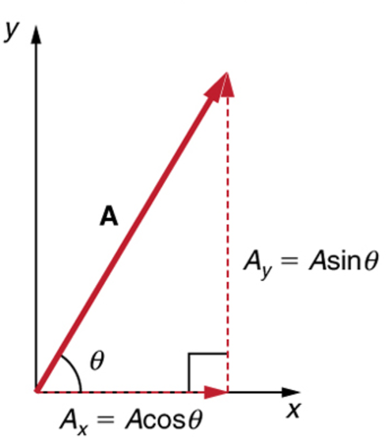
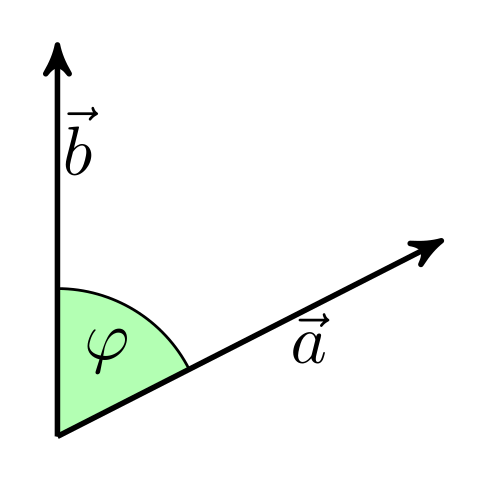

02 - Computing is a Necessary Tool for Science#

Learning Goals#
After studying Lesson 02, you should be able to:
share an example of computing in physics history that is new to you,
derive the Euler formulation for a 1 dimensional force (\(F(x)\)) and explain how the Euler algorithm predicts location,
perform standard vector manipulation tasks including decomposition along orthogonal directions, and
determine the units of variables and coefficients using base SI units as needed.
Most Classical Mechanics Systems are Nonlinear#
One of the first ideas that we developed was a model of a falling ball in one-dimension. We obtained the following differential equation that described the motion of the ball:
This nonlinear second-order differential equation is the equation of motion for the ball. It is nonlinear because the term \(\dot{y}^2\) appears in the equation.
Can you think of an anti-derivative for this equation? Probably not.
We can change the equation to a system of first-order differential equations by defining a new variable \(v = \dot{y}\), so that the equation becomes:
But the equation for \(v\) is still nonlinear. Clearly we need a different approach to solving this problem. In fact, we need a more generic approach to investigate equations of motion for systems like this. Most models of physical systems cannot be solved in closed analytical form. But, this approach to writing \(N\)th order differential equations as a system of \(N\) first-order differential equations is a powerful tool in computational physics.
Limitations of only working with analytically solvable problems
The problems that we often present in physics classes lend themselves to analytical solutions because we (collectively as a physics community) decided on the kinds of illustrative problems for students to work and solve. We did this at a time when computing was inaccessible and less pervasive in society, but also when we knew little about how people learn.
The choices we made in the past convey a false impression that most physics problems can be solved analytically. But more importantly, our choices convey that finding the solution is the goal of physics. This is not the case. The goal of physics is to understand the world around us. When we continue to focus exclusively on systems that can be solved analytically, we continue to perpetuate those impressions.
There’s a movement of physics instructors across the world building these forward-looking pedagogies and curricula. They work loosely through a collective called the Partnership for Integration of Computation into Undergraduate Physics (PICUP).
Through our work and studies, we aim to build a set of investigative tools and approaches that we can use to interrogate different classical systems. And we aim for those tools and approaches to be useful beyond your study of Classical Mechanics.
Scientific Computing#
We will explore a broad class of problems using plotting and numerical integration as principal tools. These techniques and algorithms, along with the software we use, fall within the broader field of scientific computing. Scientific computing focuses on developing mathematical models and numerical methods to solve problems in the natural sciences and engineering.
For historical context, the Timeline of the Development of Scientific Computing provides an excellent overview. The roots of this field trace back to significant advancements long before modern electronic devices. Much of the foundational mathematics, such as Euler’s Method for solving differential equations, was developed in the 18th century by Leonhard Euler. Implementing these algorithms on computers was a natural progression in scientific problem-solving, and was catalyzed by tremendous investments in the military industrial complex after World War II including the notorious RAND corporation.
History of Computing#
The history of scientific computing is deeply intertwined with the evolution of computing itself, a fascinating and complex narrative encompassing technical, social, political, military, and economic perspectives. Contributions to computing originated worldwide, starting with tools like the abacus in ancient China. Mechanical innovations such as Pascal’s adding machine and Babbage’s Analytical Engine marked significant milestones leading toward the modern computer.
To get an introductory overview, the video below from Futurology is a helpful resource, but it is by no means comprehensive or critical.
A Critical Perspective on Computing#
While the history of computing is often celebrated as a story of innovation, it is deeply entangled with systems of power, exploitation, and violence. Computing technologies have not only been tools of scientific progress but also instruments for surveillance, war, and perpetuation of systemic biases.
In fact, the principal catalysts for physics research and the development of computing technologies have been the military-industrial complex (e.g., nuclear energy, the internet, autonomous robotics). Defense contractors, often through national laboratories and using classified contracts, have worked to extract tax dollars in exchange for the development of technologies for war and destruction (e.g., nuclear weapons, surveillance technologies, and armed drones). For a critical trace of the history of science in the United States since World War II, consider Clifford’s The Tragedy of American Science: From Truman to Trump.
Humans as Computers
Of course, the electronic computer was a huge development for science. Prior to that, humans were employed to do the calculations that we now do with computational algorithms. This work occurred in a wide variety of labs where data were entered into tables, calculations were done by hand, and the results were tabulated manually.
Frequently the work was done by those with less power in the laboratory and broader society (e.g., women, immigrants, and folks of color). A notable and well-known example is the work of the Harvard Computers in the late 19th and early 20th centuries where women were employed to do the calculations that led to significant discoveries in astronomy.
One of the most important examples is the work done by African-American women at NASA in the 1960s, as depicted in the book and movie Hidden Figures.
Women highlighted in this work include: Williamina Fleming, Florence Cushman, Katherine Johnson, Dorothy Vaughan, and Mary Jackson.
The algorithms driving modern computing are not neutral—they reflect the biases of the societies that create them. In Cathy O’Neil’s Weapons of Math Destruction, the author explores how algorithms used in areas like policing, hiring, and education often reinforce systemic inequality, disproportionately harming marginalized communities. Similarly, Ruha Benjamin’s Race After Technology examines how race and technology intersect, showing how seemingly “objective” systems encode and perpetuate racial biases.
The use of AI in policing is another area of concern. Simone Browne’s Dark Matters highlights how surveillance technologies, from facial recognition to predictive policing, are rooted in practices of racialized social control, extending systems of oppression into the digital realm.
The militarization of AI is one of the most alarming developments in computing. AI-driven drones and autonomous weapons, often described as the future of warfare, raise profound ethical and humanitarian concerns. Shoshana Zuboff’s The Age of Surveillance Capitalism discusses how the same technologies used for corporate profit are repurposed for state surveillance and military applications, blurring the lines between civilian and combatant spaces.
Additionally, Peter Asaro’s work on lethal autonomous weapons questions the morality and legality of machines making life-and-death decisions. Meanwhile, Kate Crawford’s Atlas of AI explores how AI systems, from mining rare earth materials to deployment in warfare, are deeply intertwined with colonial exploitation and ecological destruction.
The tech industry’s focus on profit has devastating environmental and social impacts. Computing relies on the extraction of rare materials, energy-intensive processes, and exploitative labor practices. Naomi Klein’s This Changes Everything examines how capitalism exacerbates climate change, with insights into the environmental toll of computing technologies. Yarden Katz’s Artificial Whiteness connects the development of AI to broader systems of capitalist and racial oppression.
What does any of this have to do with Physics?#
Physics is a social and historical enterprise. It has both made incredible strides forward and created great harm here and around the world. To study physics is to understand it not only as a field of knowledge and skills, but as a social and historical driver of society. Physics is not neutral; it is not color blind; and it is not without fault.
It might make us uncomfortable to learn these histories and alternative explanations, but they are important. Understanding that the experience of others in physics is not like our own is equally important. Through understanding the history and motivation for physics and how people different from us have experienced physics, we can actively choose how to take physics forward in the future.
So learn the content, develop the skills, and question the history.
Mathematical Preliminaries#
We need a few things to get us started with making models of classical phenomenon. A few of those topics might be familiar to you; things like vectors, and derivatives. But we’ll also need to introduce some new ideas, like the concept of Discretization. We will introduce a powerful method for solving many different Differential Equations – Euler-Cromer Integration. We start by introducing the concept of Euler Discretization, and then we’ll move on to Euler-Cromer Integration later (as it corrects issues with energy conservation).
Euler Discretization#
Another useful formulation of Classical Mechanics uses discrete points in time to make approximate predictions of the motion. This is called the Euler Method. The Euler Method is a simple numerical method to solve ordinary differential equations. The method is based on the idea of approximating the derivative of a function by a finite difference.
We posit discrete time, like snapshots of the motion where a given measure of time \(t_i\) exists in a discrete set of times between \(t_0\) and \(t_f\). That is, \(t_i \in \{t_0, t_1, t_2, \ldots, t_f\}\). We conceive of the motion as discrete like the points in the figure below.
ADD FIGURE
In this case, the points are equally spaced in time, such that \(t_{i+1} - t_i = \Delta t\). This gives a simple table of the motion of the object at each time step:
time |
position |
|---|---|
\(t_0\) |
\(y_0\) |
\(t_1\) |
\(y_1\) |
\(t_2\) |
\(y_2\) |
\(\ldots\) |
\(\ldots\) |
where \(y_i\) is the position of the object at time \(t_i\). Here, \(t_i = t_0 + i\Delta t\) – equal time spacing – and \(y(t_i) = y_i\) indicates the position of the object at time \(t_i\).
Taking finite differences to define kinematic quantities#
This formulation can be used to predict the motion of the object. Let’s first define the average velocity over a time step, \(\Delta t\), like this:
Now, we know that at time, \(t_i\), the velocity is \(v_i\): \(v(t_i) = v_i\) If we make the time step small, \(\Delta t \rightarrow 0\), then the average velocity is approximately the velocity at time \(t_i\). Thus, we can write the velocity at time \(t_{i}\) as:
Note If we take the limit that \(\Delta t \rightarrow 0\), then the average velocity becomes the instantaneous velocity. This stems from the Fundamental Theorem of Calculus.
What about the acceleration? We can use the same idea to approximate the acceleration. The average acceleration is given by:
And thus, the acceleration at time \(t_i\) is:
Again, if we take the limit that \(\Delta t \rightarrow 0\), then the average acceleration becomes the instantaneous acceleration:
Predicting the motion#
Now that we conceptually understand how we can arrive at an acceleration or velocity from a discrete table of data, we can use that information instead to predict the velocity and location of the system. As we derived earlier:
Suppose instead, you have the initial acceleration, \(a_0\) and the initial location and velocity (\(y_0\) and \(v_0\)) where the zero subscripts refer to the index (the first one in an array). Then, we can predict the new velocity and position using the Euler method:
As we will see below, we can use Newton’s Second Law to develop this idea and this pair of equations into an algorithm that will allow us to predict the velocity and location of any system.
Video Summary (13 minutes)#
There’s many videos covering the topic of Euler’s method. Here’s a video that covers the basics of Euler’s method and how it can be used to solve differential equations. It somewhat follows the notes above, but it’s always good to hear another perspective.
Discretizing Newton’s Second Law#
We can use the Euler Method to discretize Newton’s Second Law, and this allows us to predict the motion of the object using iterative methods. These methods are well-suited for computers, and we will learn how to implement them soon.
Let there be a 1D net force acting the x-direction on an object of mass \(m\), \(F(x)\). Here the force changes with position. We can discretize this force as a function of position, \(F(x_i)\). The net force acting on the object is:
Using Newton’s Second Law, we can write the acceleration of the object as:
But the definition of the average acceleration gives:
Or in terms of the predicted velocity, \(v_{i+1}\):
Or in terms of the net force:
This is the Euler formulation for predicting the velocity of the object in the next time step – given the velocity at the current time step.
We pause here and will return to this formulation later, but this discretization is the basis for many numerical methods in classical mechanics, and we can apply it to solve the falling object problem above.
Looking Ahead#
The development of the forward Euler scheme is the basis for many numerical methods in physics, and especially in classical mechanics. The video below is a longer introduction to the Euler Method and how it can be used to solve differential equations. It’s a bit more advanced than the previous video, but it’s a good introduction to the topic. We will revisit this topic a number of times, and you will have a chance to implement these methods in Python. This video will be posted again when we cover numerical methods in more detail.
Additional Preliminaries#
As you have noticed, much of what we do in classical mechanics involves solving differential equations. We will explore how to solve these equations. But also notice that most of the work involves vector manipulation and/or decomposition. Thus, we will need to be comfortable with vectors. Below are some mathematical concepts of vectors that we will use frequently.
Vectors and Coordinates#
The figure below shows a vector in two dimensions.

The vector is defined by its magnitude, \(A\), and its direction, \(\theta\). The vector can be decomposed into two components, \(A_x\) and \(A_y\), in the \(x\) and \(y\) directions, respectively.
The magnitude of the vector is given by the Pythagorean theorem:
The angle of the vector is given by the tangent of the angle:
We can find the vector components using the magnitude and angle:
It’s important to note that the vector components are the projections of the vector onto the \(x\) and \(y\) axes. The vector components are scalars, and the vector is a sum of the components. We can write the vector in several common forms:
Unit Vectors#
The unit vectors, \(\hat{x}\), \(\hat{y}\), \(\hat{i}\), \(\hat{j}\), \(\hat{e}_x\), and \(\hat{e}_y\), are the basis vectors in the \(x\) and \(y\) directions. The unit vectors are used to define the vector components.
Interestingly, the angle of the vector is not needed to write the vector in Plane Polar Coordinates (\(r\), \(\theta\)). The vector can be written as:
where \(\hat{A}\) is the unit vector in the direction of \(\vec{A}\). Let’s check that works out:
Such that,
Cartesian unit vectors are fixed in space and time when in an inertial reference frame. However, the unit vectors in Plane Polar Coordinates are not fixed in space and time. They rotate with the vector. This is a common source of confusion when working with vectors in different coordinate systems, which we will come back to later.
The magnitude of a unit vector is always one, \(|\hat{A}| = 1\). And unit vectors are orthogonal to each other, \(\hat{x} \cdot \hat{y} = 0\).
Multiplication of Vectors#
Dot (Scalar) Product#
A dot product of two vectors is a scalar quantity. The dot product of two 3D vectors, \(\vec{a}\) and \(\vec{b}\), is given by:
This product is also equal to the product of the magnitudes of the vectors and the cosine of the angle between them:
The figure below shows the relationship between the vectors and the angle.

Source: Wikipedia
{kind=link}
Much like scalar multiplication, a dot produce is distributive:
Here’s the proof:
Cross (Vector) Product#
The cross product of two vectors is a vector quantity. The cross product of two 3D vectors, \(\vec{a}\) and \(\vec{b}\), is given by:
This results in a vector that has the following components:
A few notes about cross products:
\(\vec{a} \times \vec{b}\) always produces a vector and never a scalar.
\((\vec{a} \times \vec{b})_i\) denotes the \(i\)-th component of the cross product.
\(\vec{a} \times \vec{b} \neq \vec{b} \times \vec{a}\); order matters.
What is the relationship between \(\vec{a} \times \vec{b}\) and \(\vec{a} \cdot \vec{b}\)? The right-hand rule gives the direction of the cross product. The magnitude of the cross product is given by:
And thus both magnitudes are the same, however, the directions are opposite.
Units#
In classical mechanics, we will use the International System of Units (SI). The SI units are the standard units used in science and engineering. The primary units we will use in this course are related to the motion of objects:
Length: The meter, \(m\), is the standard unit of length, \([r] = \mathrm{length}\).
Mass: The kilogram, \(kg\), is the standard unit of mass, \([m] = \mathrm{mass}\).
Time: The second, \(s\), is the standard unit of time, \([t] = \mathrm{time}\).
From these basic units, we can derive the other units. We also use velocity, acceleration, force, momentum, and energy.
Velocity: The meter per second, \(m/s\), is the standard unit of velocity, \([v] = \mathrm{length/time}\).
Acceleration: The meter per second squared, \(m/s^2\), is the standard unit of acceleration, \([a] = \mathrm{length/time^2}\).
Force: The Newton, \(N\), is the standard unit of force, \([F] = \mathrm{mass*length/(time)^2}\).
Momentum: The kilogram meter per second, \(kg\cdot m/s\), is the standard unit of momentum, \([p] = \mathrm{mass*length/time}\).
Energy: The Joule, \(J\), is the standard unit of energy, \([E] = \mathrm{mass*length}^2/\mathrm{time}^2\).
Example: What are the units of the drag coefficients?#
Recall the drag force, \(F_{air} = bv + cv^2\). The units of the drag coefficients, \(b\) and \(c\), can be found by examining the units of the force. The units of the force are:
The units need to match on both sides of the equation. Thus, the units of the drag coefficients are:
Thus, the units of the drag coefficients are:
Additional Resources for Exploration of Science, Computing, and Society#
For deeper dives into some of sociocultural and historical issues referenced above, consider the following materials:
Resource |
Description |
|---|---|
Clifford’s The Tragedy of American Science: From Truman to Trump |
A science historian explores the wartime and capitalist underpinnings of the growth of science identifying where decisions were made to center defense spending and the enrichment of a few over the societal good that science could do if different choices were made. |
Chronicles the origins of the modern computer, focusing on John von Neumann and his team at Princeton in the 1940s. This book delves into the intersection of mathematics, physics, and computation, highlighting the development of the first stored-program computers and their role in shaping the digital age. |
|
Explores the transformative impact of information theory on science, technology, and culture. From the invention of writing to the digital age, Gleick highlights key figures like Michigander Claude Shannon, who revolutionized communication with his groundbreaking mathematical theory of information. |
|
Chronicles the rise of hacker culture, from early computer pioneers to the creators of the personal computer revolution. Levy examines the “hacker ethic,” emphasizing creativity, open access, and the joy of problem-solving, which shaped the tools and technologies we use today. |
|
Explores how algorithms, often marketed as objective, exacerbate inequality in policing, hiring, and credit scoring. O’Neil critically examines the dangers of data-driven systems that disproportionately harm marginalized communities while remaining opaque and unregulated. |
|
Analyzes how algorithms and technologies reinforce systemic racism under the guise of neutrality. Benjamin introduces the concept of the “New Jim Code,” highlighting the ways in which technological tools amplify inequities while appearing fair and impartial. |
|
Examines how surveillance technologies are deeply rooted in practices of racialized social control. Browne connects historical practices like slave surveillance to modern tools like facial recognition and predictive policing, revealing the persistence of systemic inequities in new forms. |
|
Explores the hidden costs of artificial intelligence, from resource extraction to labor exploitation and military applications. Crawford critiques AI as an extractive industry that reshapes power dynamics and perpetuates global inequalities while causing significant environmental damage. |
|
Investigates how corporations and governments exploit personal data for profit and control. Zuboff coins the term “surveillance capitalism” to describe how the tech industry commodifies human behavior, eroding privacy and autonomy while reshaping society’s power structures. |